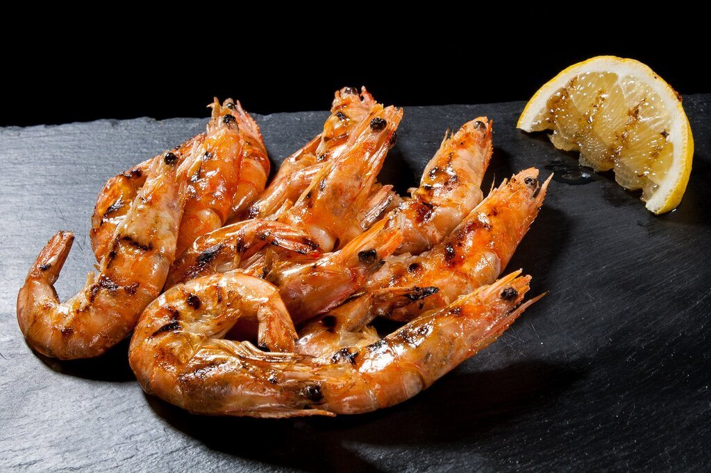

Меню
и цены
Девять разделов: сковородки и мачанка, стейки, закуски, супы, сеты. Все цены в белорусских рублях.
Горячие блюда
13 позицийКуриное филе с баклажаном, цукини, перцем и шампиньонами в томатном соусе с чесноком
Куриное филе, хрустящие драники, шампиньоны, сметана и маринованный огурец
Ломтики говяжьей вырезки, картофель с луком, шампиньоны и стручковая фасоль
Отварные свиные уши под соусом «Коктейль», картофель по-деревенски, сыр
Бёдра на гриле, картофель фри, соус сальса, черри и маринованный лук
Тонкие блины со свининой и филе птицы, обжаренный лук, шампиньоны, соус
Драник, свинина и грудинка, филе птицы, шампиньоны, сметанный соус
Цукини, перец, шампиньоны и черри в маринаде для гриля
Свиная шея с грудинкой, шампиньоны, лук, сметана и зелень
Сёмга в сливочном соусе, брокколи, черри, сыр и лимон
Колбаски, ростбиф из рубленой говядины, яйцо, маринованный лук, картофель
Свиная грудинка и отбивная на гриле, картофельные шарики, яйцо, овощи
Говяжий язык, картофель, лук, шампиньоны, сметана и тёртый сыр
Стейки
3 позицийНежное мясо с прожаренной корочкой, подаём с гарниром на выбор
Свинина на гриле, обжаренный картофель, насыщенный демиглас
Филе в маринаде из пряных трав, сочное внутри и с ароматной корочкой
Закуски
4 позицийСолёная грудинка, отварной картофель, маринованный лук, горчица и хлеб
Тонкие ломтики вырезки, пармезан, лимонная заправка, черри
Квашеная капуста с морковью, бочковые огурцы, помидоры и лук
Помидоры, огурцы, перец, маслины и оливки, зелень
Салаты
4 позицийГовяжий язык и рваная говядина, картофель, шампиньоны, маринованный лук
Курица, салат, помидор, пармезан, гренки и соус цезарь
Сельдь с маринованным луком под овощной шубой, майонез
Овощи, маслины, фета, маринованный лук и лёгкий соус
Супы
2 позицийМясной борщ с говядиной, солёной грудинкой, сметаной и гренками
Куриное филе, яйцо, зелень и свежая чесночная булочка
Горячие закуски
2 позицийСыр в хрустящей корочке с чесноком и паприкой, соус датский
Куриное филе в корочке из сухарей, обжаренное до золотистого цвета
Сеты
1 позицийКуриная грудка, свиная шея и говяжья вырезка на гриле, соусы барбекю и сальса
Гарниры
4 позицийЧетыре золотистых драника со сметаной
Хрустящие снаружи, мягкие внутри, подаём с соусом
На пару, с кусочком сливочного масла
Из ланч-меню: золотистый картофель с кетчупом
Хлеб
2 позицийМягкая булочка со сливочным маслом и чесноком
Подаём к закускам и супам
Цены и состав по меню доставки от 4 октября, источник: Яндекс Еда. В зале блюда и цены могут отличаться: уточняйте у официанта. Вес указан для порции.
смета вечера
Сколько стоит
посидеть
Соберите сценарий: повод и число гостей. Покажем набор блюд с ценами из меню и сумму. Это ориентир, а не счёт: в зале подскажем по порциям.
Крафтовое пиво: бокал 2 рубля. Кофе с собой и напитки считаются отдельно.
СЦЕНАРИЙ · СВИДАНИЕ
Свидание или ужин вдвоём
Цены по меню доставки от 4 октября. В зале блюда и цены могут отличаться, уточняйте у официанта.